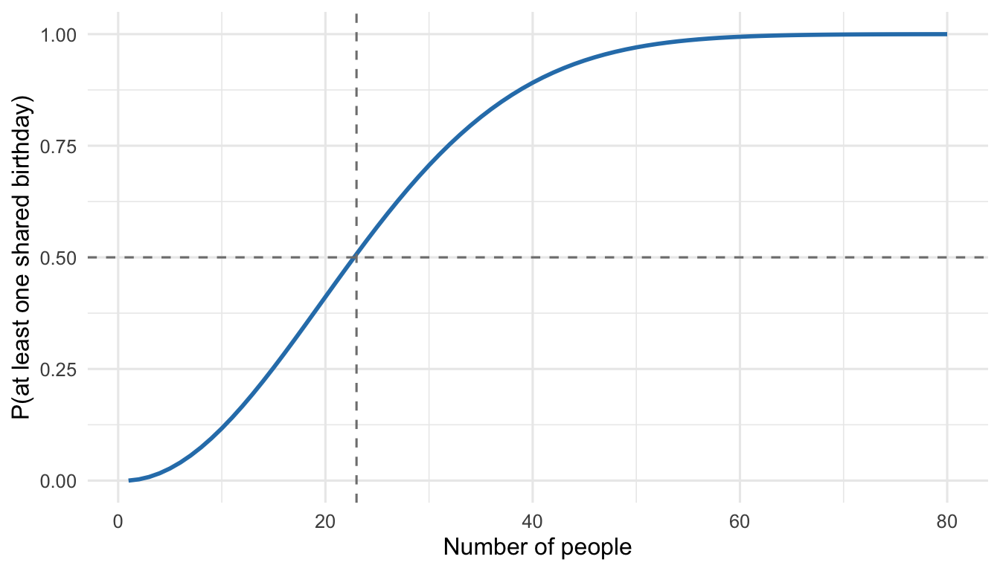

A worked derivation of the birthday paradox: the exact probability, the exponential approximation, the square-root scaling law, and a Monte Carlo check in R.
probability
combinatorics
simulation
Author
Paul Milne
Published
October 17, 2026
Put 23 people in a room and the chance that two of them share a birthday is better than 50%. It feels wrong, which is why it’s called a paradox, but it’s a true statement and the arithmetic is short.
Count the complement
Assume 365 equally likely birthdays (ignore 29 February and seasonal effects). Computing “at least one match” directly is messy, so compute the opposite: no one shares a birthday.
Person 1 can have any birthday. Person 2 must avoid 1 day, so has probability \(364/365\). Person 3 must avoid 2 days, so \(363/365\), and so on. For \(n\) people,
The probability crosses 50% at \(n = 23\) and passes 99% by \(n = 57\).
df <-tibble(n =1:80, p =p_match(1:80))ggplot(df, aes(n, p)) +geom_line(linewidth =1, colour ="#2c7fb8") +geom_hline(yintercept =0.5, linetype ="dashed", colour ="grey50") +geom_vline(xintercept =23, linetype ="dashed", colour ="grey50") +labs(x ="Number of people", y ="P(at least one shared birthday)")

Figure 1: Exact probability of at least one shared birthday as the group grows. The 50% line is crossed at n = 23.
Why it feels wrong: pairs, not people
The intuition says “23 is small next to 365”. But we aren’t asking whether someone matches my birthday. We’re asking whether any pair matches, and the number of pairs grows quadratically:
Each pair matches with probability \(1/365\), so with 253 pairs a match is no longer surprising. (Pairs aren’t independent, so this is only a heuristic, but it points at the right scaling.)
Setting this equal to \(1/2\) and solving for \(n\) gives
\[
n \approx \sqrt{2\ln 2\; d}\;\approx\; 1.18\sqrt{d},
\]
which for \(d = 365\) is about \(22.5\). So the threshold scales as \(\sqrt{d}\) rather than \(d\). That square-root law is what makes hash collisions arrive so much sooner than people expect: a 64-bit hash has \(d = 2^{64}\) values, yet collisions become likely after only about \(2^{32}\) items.